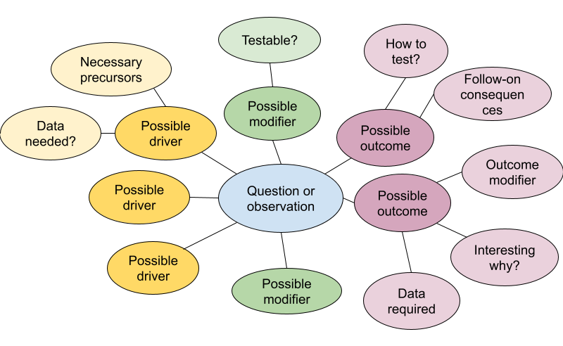

Next Steps & Logic Models
Overview
Whether group members are excited about continuing to work together or ready to go their own ways, a little thought and discussion about how group members envision their next steps can set you up for success. In this module, we discuss ways to help ensure that your work is recognized and cited, talk about expectations going forward, and begin thinking about how continued work could be supported.
Learning Objectives
After completing this module you will be able to:
- Identify needed data and target audience(s)
- Articulate connection(s) between proposed investigation and beneficial outcome
- Write polished, funding-worthy proposals
Preparation
No specific preparation required.
Networking Session
Dr. Cristina Portales Reyes, Assistant Professor, St. Louis University Cristy participated in the synchrony synthesis working group as a graduate student at the University of Minnesota. That group had barely finished when she proposed (and was awarded) a working group that she now leads on difficult-to-reverse ecosystem transitions.
Dr. Laureano Gherardi, Assistant Professor, Berkeley University Laureano also participated in the synchrony synthesis working group as a graduate student at Arizona State University and followed it up with not one, but three additional synthesis groups: ecosystem transitions, global drought effects, and resilience and management.
Make Data and Code Findable
Depositing your assembled dataset in a public repository ensures that others can find it. Using a repository with high-quality, machine-readable metadata goes a long way toward ensuring that it is usable and appropriately credited. Unless there is a specific reason not to use the Environmental Data Initiative (EDI) repository, it is what we recommend for LTER-related data because EDI serves some of the most “findable, accessible, interoperable, and reusable” (FAIR) environmental data available. Also, since EDI serves the vast majority of LTER data, co-locating your synthesis data makes it more available to users seeking similar types of data.
The Environmental Data Initiative has developed the ezEML app to simplify the publication of datasets with high-quality metadata. The form-based tool leads users through creating and validating Ecological Metadata Language (EML) documents, a standard that can describe many types of data and their use cases, and then submitting them to the repository with accompanying data files. To prepare for submitting your data you’ll need to gather some information and make a few decisions.
General dataset descriptors: You’ll need a title, abstract, keywords and list of dataset creators (with associated ORCIDs). While it’s tempting to just use the abstract for your paper here, an abstract for a dataset does NOT focus on scientific findings. Instead, focus on the purpose of the data, how they were assembled and what decisions were made in the process. In writing your metadata, try to adopt the perspective of a data user and ensure that the information you provide answers questions they might have about data quality and fitness for use.
Data table descriptors: The most common submission formats in EDI are simple comma-separated value (CSV) tables. What tables does your synthesized dataset contain, and how do they relate to each other?
Column descriptors: List the column names, units, and descriptions for each column in each table.
Methods: Be ready to describe, in reproducible detail, the steps used to create the published dataset. For a synthesis project, your team probably spent considerable time finding, cleaning, harmonizing, and assembling the finished product into something that could be analyzed. What were these steps?
Provenance: What original data sources did you draw on? You’ll want your dataset to link to the original data sources so that they, too, receive credit for their work. In ezEML, data provenance information is associated with the methods metadata, and links are displayed on all EDI dataset landing pages.
Reuse: ezEML will ask you to decide on a license for reuse of your synthesized data. EDI and LTER recommend using a CC-0 public domain dedication which allows reuse and adaptation without requiring a specific form of citation. Professional standards and EDI policy encourage citation, but preserving flexibility about the form of citation relieves downstream users from the obligation to cite data in ways that may not be workable for large syntheses. CC-BY is also an acceptable license. It allows downstream users to re-share and adapt the licensed work, but requires that users “give appropriate credit, provide a link to the license, and indicate if changes were made.”
How to share code: Chances are, your code is already public on GitHub (and hopefully, well documented), but you’ll want to create a persistent reference to the version of the code that you used to conduct this analysis. One way to go is to package your code along with your data on EDI. That approach makes the code findable, because it is right there with the data, but the code remains static, and it can be difficult to represent the software package structure and release history. Many researchers now prefer to release their GitHub repository code on Zenodo and reference the specific release with their dataset in EDI or another repository. This allows continued development of code in the repository, while linking together the dataset and the code for creating or analyzing it. This approach is great for synthesis groups that will continue adding new data, analyses, or publications in the future.
Promote your dataset (and other products)
Now that potential users and collaborators can find your dataset, how will they? Data in EDI are easily found through EDI, DataONE and Google data search, but many potential users won’t even know what they should be searching for. “Build it and they will come” doesn’t work much better for data than it does in other realms – at least not yet. Eventually, AI-driven search tools for researchers may improve the situation, but for now it’s still important to garner the attention of individuals. Who do you want to reach? Who you want to reach and what you want them to do with the data, paper, or other tool will influence how you spend the (likely quite limited) time you have to spend on promotion.
Want to reach community ecologists? Modellers? Land managers? Teachers? The choice will affect both where and how you promote the work. The choices here are endless, but the examples below illustrate the principle.
Data papers are essentially an extended version of your metadata, published in the form of a paper, and referencing the published dataset. They are great for calling attention to a high-value dataset, especially when it crosses disciplinary boundaries. Data papers are most appropriate when you want to reach people, such as modelers, who will use the dataset directly rather than your analysis and interpretation. Earth System Science Data, Biodiversity Data Journal, and Scientific Data all focus on data papers and are relevant for environmental science.
Scientific conferences. Talks and posters at scientific conferences such as the Ecological Society of America or the American Geophysical Union are the go-to option for promoting your work to researchers in your field. But if you want people to use your dataset, not just admire your brilliance, you might consider running a symposium that allows more time for discussion or a workshop to get colleagues working with the data in a hands-on way. Note that the deadlines for proposing workshops and symposium sessions are often much earlier than for individual talks and posters.
Webinars. Many scientific networks and societies offer webinar series and are happy to host and promote webinars about new developments in the field. For a pretty modest investment on your part, you can reach a very targeted audience of researchers or educators with interest in your work.
Social media. BlueSky is picking up many refugees from the once-thriving science community on X. Instagram, YouTube, Reddit and TikTok also carry a good deal of science content. If you already have experience with the platform and a community of followers, social media can rapidly expand exposure for datasets and papers. You can also fine-tune your strategy by tagging accounts with large audiences of people similar to those you want to reach.
Newsletters and trade publications. If your work is truly relevant to a particular group of professionals such as land managers, urban planners, fishers, or foresters, consider developing a polished one-page summary or an infographic and reaching out to relevant trade journals and newsletters.
Whatever tactics you pursue, spend a little time as a group agreeing on the language and the main talking points about your work. The potential impact is much greater when everyone amplifies a coherent set of messages. One time-honored tool for developing these messages is the “Message Box” developed by COMPASS. Assembling those key messages in one location, such as on a project website, also gives each team member a place to point interested individuals and a touchstone for reference.
Park Downhill
Beyond preserving and promoting the current work, there are a few things you can do to prepare for the new research opportunities that it can generate. Ideally, the group has been tracking spinoff ideas as they come up. It’s impractical to chase them all down in the moment, but recording them, with just a few sentences of context and explanation, will help to resurface the inspiration at a later date.
Now is the time to pull those ideas out of mothballs or, alternatively, return to the mind maps we made in the project management session to unearth some new ones.

You are now well on your way to nailing down one, maybe two, of the relationships on that mind map. But chances are that the data you’ve assembled sheds light on several more. In this project group discussion, we’ll take some time to identify and explore a few of them.
When thinking about how to support a research program, strategy (setting goals and making plans to achieve them) is often contrasted with an opportunistic approach. But really, it’s essential to apply a bit of both. The list of people and agencies you generated from this exercise serves as a starting point for exploring funding opportunities. That way, you know they already have an interest in work that will lead toward your goals. When you find an opportunity that intersects with a problem that you have the tools, skills, and data to tackle, that’s when you spring into action, building on knowledge gaps that you’ve already identified.
Crafting a compelling proposal
No matter your audience, you need to put yourself in their shoes. Decision makers spend their limited resources to meet their goals.
I’m going out on a limb here to say that ALL proposals need: - Context - what is already known/done? What’s the gap you’re trying to fill? - What do you want to do? - How do you plan to do it? - Why are you the right person/group to do it? - Why is it a fit for THIS funder? - What do you expect the results to be
Depending on the source of funding, the order and emphasis of these items will be different. For a foundation funder, the need and results might be most important, with the precise “how” taking a back seat.For a science agency, context and work plan will take higher priority, but be sure to include why you are the right group to do it and what you expect the results to be–even if only a sentence or two.
Even for an individual donor, you’ll want to have a list of talking points that addresses these questions, you just won’t turn it into a formal proposal until you’ve had a conversation or two.
Additional Resources
Schimel, Joshua. Writing Science: How to Write Papers That Get Cited and Proposals That Get Funded. Oxford University Press. 2011.
Resource list of funding sources and search tools - NSF funding search - DoE funding search - Cooperative Ecosystem Studies Units (CESU) - International Synthesis Consortium is an umbrella group for synthesis centers across disciplines - Pivot-RP, a Clarivate product that curates funding opportunities across public and private sources. Pivot is a paid product, but most research universities have access. - Philanthropy News Digest publishes a feed of requests for proposals from private foundations. It can be filtered by topic, location, and other keywords. Awards are small, relative to federal funding agencies and topics tend to be applied. - Community Foundations fund project with clear benefits to a local community. - State environmental and fish and wildlife agencies often have a need for science to inform their conservation activities
Papers & Documents
- Deutsch L., et al., Leading Inter- and Transdisciplinary Research: Lessons from Applying Theories of Change to a Strategic Research Program. 2021. Environmental Science & Policy
Workshops & Courses
Websites
- Shabanov, I. (@Artifexx) Tweet on logic models. 2024.